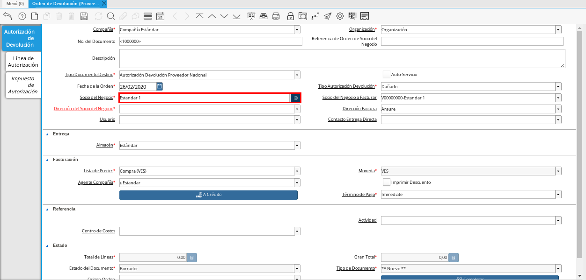
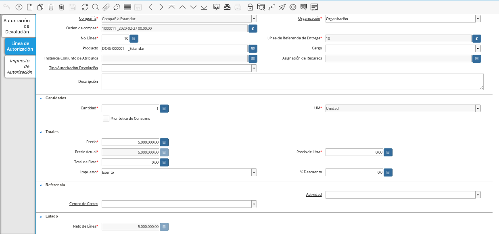
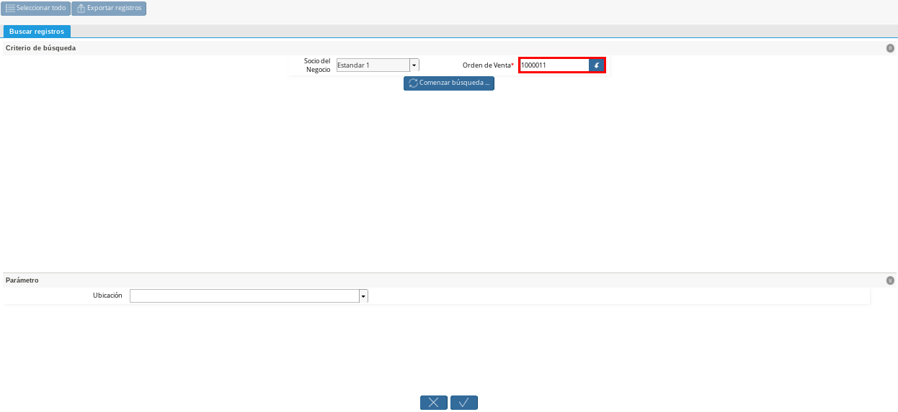

Autorización de Devolución a Proveedor
Es el documento elaborado por la empresa luego de una evaluación de la condición de los productos o materiales comprados al proveedor, cuando estos no se encuentran en buenas condiciones o simplemente no cumplen con lo requerido, el mismo autoriza la devolución de uno, varios, o todos los productos o materiales comprados.
Para realizar una devolución a proveedor deben existir los documentos “Orden de Compra”, “Factura de Cuentas por Pagar” y “Recepción”. Para ejemplificar el registro de la devolución a proveedor se tienen los siguientes documentos.
Puede visualizar el documento “Orden de Compra” en estado “Completo”, con monto “10.000.000,00”.

Imagen 1. Documento Orden de Compra
Puede visualizar el “Factura de Cuentas por Pagar” en estado “Completo”, con monto “10.000.000,00”.

Imagen 2. Factura de Cuentas por Pagar
Puede visualizar el documento de “Recepción” en estado “Completo”, con monto “10.000.000,00”.

Imagen 3. Documento de Recepción
Al consultar saldos abiertos se puede visualizar el saldo correspondiente al monto de la factura de cuentas por pagar mostrado anteriormente.
Imagen 4. Saldos Abiertos

A continuación se define el proceso para la creación de una autorización de devolución a proveedor en ADempiere.
Ubique en el menú de ADempiere la ventana “Gestión de Compras”, luego seleccione la ventana “Orden de Devolución (Proveedor)”.
Imagen 5. Menú de ADempiere

Seleccione el icono “Registro Nuevo” en la barra de herramientas de ADempiere y proceda al llenado de los campos correspondientes.
Imagen 6. Icono de Registro Nuevo
Warning
Recuerde que cada campo es necesario e importante para obtener el registro exitoso del documento en ADempiere.
Seleccione en el campo “Organización”, la organización para la cual esta realizando el documento “Autorización de Devolución a Proveedor”.
Imagen 7. Campo Organización
Seleccione el tipo de documento a generar en el campo “Tipo de Documento Destino”, la selección de este define el comportamiento del documento que se esta elaborando, dicho comportamiento se encuentra explicado en el documento Tipo de Documento elaborado por ERPyA. Para este ejemplo el tipo de documento es “Autorización Devolución Proveedor Nacional”.
Imagen 8. Campo Tipo de Documento
Seleccione en el campo “Tipo Autorización Devolución”, el motivo o la condición del producto por el cual es requerida una autorización de devolución. Para este ejemplo el tipo de autorización es “Dañado”.
Imagen 9. Campo Tipo Autorización Devolución
Seleccione en el campo “Socio del Negocio”, el socio del negocio proveedor al cual se le realizará la devolución.

Imagen 10. Campo Socio del Negocio
Seleccione la dirección de localización del socio del negocio, en el campo “Dirección del Socio del Negocio”.
Imagen 11. Dirección del Socio del Negocio
Warning
Recuerde guardar los cambios realizados en cada pestaña del documento con ayuda del icono “Guardar” en la barra de herramientas de ADempiere, al guardar los cambios realizados se asigna automáticamente el número del documento en el campo “No. del Documento”.
Seleccione el icono “Proceso” ubicado en la barra de herramientas de ADempiere, luego seleccione la opción “Crear Orden de Devolución desde Entrega / Recibo” para crear la “Orden de Devolución” desde la recepción del producto.
Imagen 12. Icono Proceso
Podrá visualizar la siguiente ventana del proceso, donde debe seleccionar el documento de recepción donde se encuentra el producto.
Imagen 13. Ventana del Proceso y Selección del Documento de Recepción
Note
El campo “Socio del Negocio” viene precargado con la información seleccionada en el campo “Socio del Negocio” ubicado en la ventana “Orden de Devolución (Proveedor)”. Al seleccionar el identificador del campo “Entrega / Recibo” podrá visualizar las diferentes recepciones asociadas al socio del negocio que se encuentra seleccionado en dicho campo, permitiendole seleccionar la línea del documento de recepción donde se encuentra el producto involucrado en la devolución.
Seleccione la opción “Comenzar Búsqueda” para buscar las líneas del documento de recepción seleccionado.
Imagen 14. Opción Comenzar Búsqueda
Seleccione la línea del documento de recepción donde se encuentra el producto que se va a devolver, luego seleccione la opción “OK” para cargar el registro a la pestaña “Línea de Autorización”.
Imagen 15. Seleccionar Línea con el Producto a Devolver
Warning
Recuerde actualizar el registro de la ventana con ayuda del icono “Refrescar” ubicado en la barra de herramientas de ADempiere.
Seleccione la pestaña “Línea de Autorización” para verificar que los datos fueron cargados correctamente.

Imagen 16. Pestaña Línea de Autorización
Note
Si la cantidad de productos a devolver es menor a la cantidad de productos recepcionados, recuerde ingresar en el campo “Cantidad”, el valor o la cantidad de productos a devolver.


Regrese a la ventana principal “Autorización Devolución Proveedor”, seleccione la opción “Completar” en la parte inferior del documento.
Imagen 17. Opción Completar

Seleccione la acción “Completar” y la opción “OK” para completar el documento.
Imagen 18. Acción Completar

Devolución a Proveedor
Es el documento que refleja la devolución de uno, varios, o todos los productos o materiales comprados a un proveedor determinado. A continuación se define el proceso para la creación de una devolución a proveedor en ADempiere.
Ubique en el menú de ADempiere la ventana “Gestión de Devoluciones” y seleccione la ventana “Devolución a Proveedor”.
Imagen 19. Menú de ADempiere

Seleccione el icono “Registro Nuevo” en la barra de herramientas de ADempiere y proceda al llenado de los campos correspondientes.
Imagen 20. Icono Registro Nuevo
Warning
Recuerde que cada campo es necesario e importante para obtener el registro exitoso del documento en ADempiere.
Seleccione en el campo “Organización”, la organización para la cual esta realizando el documento “Devolución a Proveedor”.
Imagen 21. Campo Organización
Seleccione el tipo de documento a generar en el campo “Tipo de Documento Destino”, la selección de este define el comportamiento del documento que se esta elaborando, dicho comportamiento se encuentra explicado en el documento Tipo de Documento elaborado por ERPyA. Para este ejemplo el tipo de documento es “Devolución a Proveedor Nacional”.
Imagen 22. Campo Tipo de Documento
Seleccione en el campo “Socio del Negocio”, el socio del negocio proveedor al cual se le ralizará la devolución del producto.
Imagen 23. Campo Socio del Negocio
Warning
Recuerde guardar los cambios realizados en cada pestaña del documento con ayuda del icono “Guardar” en la barra de herramientas de ADempiere, al guardar los cambios realizados se asigna automáticamente el número del documento en el campo “No. del Documento”.
Seleccione el icono “Proceso” ubicado en la barra de herramientas de ADempiere, luego seleccione la opción “Crear Devolución Desde Orden (ADM)” para crear la “Devolución a Proveedor” desde la “Orden de Devolución” del producto.
Imagen 24. Icono Proceso
Podrá visualizar la siguiente ventana del proceso, donde debe seleccionar el documento de autorización de devolución creado anteriormente.

Imagen 25. Ventana del Proceso y Selección del Documento de Recepción
Note
El campo “Socio del Negocio” viene precargado con la información seleccionada en el campo “Socio del Negocio” ubicado en la ventana “Devolución a Proveedor”. Al seleccionar el identificador del campo “Orden de Venta” podrá visualizar las diferentes autorizaciones de devoluciones asociadas al socio del negocio que se encuentra seleccionado en dicho campo, permitiendole seleccionar la línea del documento de autorización de devolución a proveedor, donde se encuentra el producto involucrado en la devolución.
Seleccione la opción “Comenzar Búsqueda” para buscar las líneas del documento de autorización seleccionado.
Imagen 26. Opción Comenzar Búsqueda
Seleccione la línea del documento de autorización de devolución donde se encuentra el producto que se va a devolver, luego seleccione la opción “OK” para cargar el registro a la pestaña “Línea de Devolución”.
Imagen 27. Seleccionar Línea con el Producto a Devolver
Warning
Recuerde actualizar el registro de la ventana con ayuda del icono “Refrescar” ubicado en la barra de herramientas de ADempiere.
Seleccione la pestaña “Línea de Autorización” para verificar que los datos fueron cargados correctamente.
Imagen 28. Pestaña Línea de Autorización


Regrese a la ventana principal “Devolución a Proveedor”, seleccione la opción “Completar” en la parte inferior del documento.
Imagen 29. Opción Completar

Seleccione la acción “Completar” y la opción “OK” para completar el documento.
Imagen 30. Acción Completar
Seleccione la opción “Generar Facturas desde Recibos”, para generar el documento “Nota de Crédito” desde la ventana “Devolución a Proveedor”.
Imagen 31. Generar Facturas desde Recibos
Podrá visualizar la siguiente ventana donde debe seleccionar la opción “OK”.
Imagen 32. Ventana Generar Facturas desde Recibos y Seleccionar Opción OK


Note
El documento “Nota de Crédito” es generado en estado “Borrador”, el número del mismo se puede visualizar en la parte inferior derecha de la ventana “Devolución a Proveedor”.
Completar Nota de Crédito Generada
Podrá visualizar el documento “Nota de Crédito” generado desde la ventana “Devolución a Proveedor”, al buscar el mismo con número de documento “1000080”.
Imagen 33. Nota de Crédito
Seleccione en el campo “Factura Afectada”, la factura de cuentas por pagar al cual le será aplicada la nota de crédito. Para ejemplificar el registro, es seleccionada la factura “1000076”.
Imagen 34. Campo Factura Afectada
Seleccione la opción “Completar” ubicada en la parte inferior derecha del documento.
Imagen 35. Opción Completar
Seleccione la acción “Completar” y la opción “OK”, para completar el documento “Nota de Crédito”.
Imagen 36. Acción Completar


Consultar Saldos Abiertos
Al consultar saldos abiertos se verifica que la nota de crédito haya sido aplicada a la factura, generando un descuento al saldo abierto de la factura de cuentas por pagar de la siguiente manera.
Imagen 37. Saldos Abiertos a la Fecha

Consultar Detalle de Transacciones
Al consultar los detalles de transacciones se verifican los movimientos de entrada de productos por medio de una recepción, generando con ello un aumento al total de productos. De igual manera es reflejada la salida de productos por medio de una devolución a proveedor, generando con ello un descuento al total de productos en existencia.
Imagen 38. Detalle de Transacciones